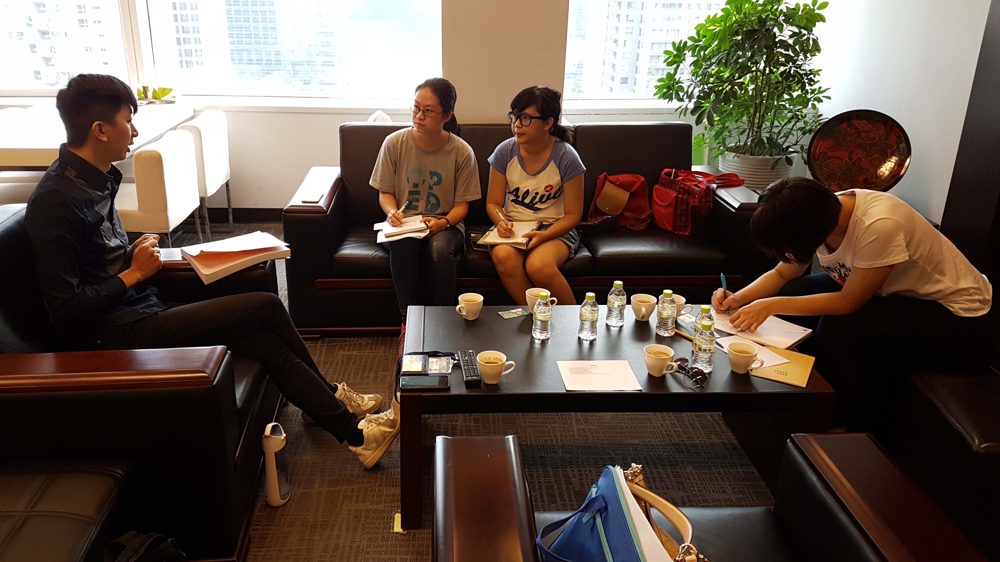

Yo-Yu Lin, the assistant of Yao-Zon Chang city councilman
In the program “ Manufacture project of the drain of Han river from Chi-Shan bridge to Guo-Guan bridge, ” the duty of a city councilman is to supervise the schedule regularly after the program was proposed. Following is the record of our interview with Lin, the assistant of city councilor Chang.
The remediated Cambridge not only makes the citizen visit here more often, but also attracts tourists during weekends. Canoeing team uses here as their training place, but in the past they might cause some argument with the anglers. Canoeing team had to share the resources of Cambridge with other anglers since there was no law and Cambridge was a public place. Some of the anglers hoped that laws about water activities could be set in Taichung. For the remediated Cambridge in the future, our purpose is still to purify the water quality.
Difficulties in Practice
Image source: photographed by ourselvesIn the process of promoting the project, the most commonly encountered difficulty was probably that the public authorities always said to us that they did not have enough money. However, if there is really no funding at this stage, then it is also a good idea to make a wholesome plan first. After the plan is passed, we may go at raising funds.
Another obstacle encountered is the local voice. Just as in a class, each person will have different opinions. In the process of remediation, the executive department collects the opinions of many people and often do not know whom they should listen to. There are users' opinions, local people's voices and also opinions of representatives of public posts. When many different opinions are gathered together, it is easy to have a dispute and no one can say whose opinion is the best. At this moment, the role of city councilor Chang is to coordinate the work so that the obstacles will be minimized and the project can proceed smoothly.
Difference after Mediation
 Image source: photographed by ourselves
Image source: photographed by ourselves
After the remediation, because of the clean water and green environment, many people will take a walk after dinner. There will be visitors having a picnic here. We can also see the anglers fishing here. Most attractive are the street artists performing on both banks.
The city councilor is so happy to see all the positive effects happening because of his efforts. Actually, to bring some benefits by renewing the environment is more important than an election.